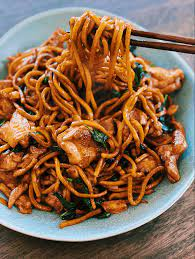

Chicken Noodle Stir-Fry

A dish that originates in Asia that many love as a quick, easy and delicious meal. depending on how you make it
can be very flexible and helpful to those that value a balanced meal.
To find out how to make a lovely timeless favourite please continue reading!
Ingredients
- Dry noodle packet
- Onion
- Grarlic
- Chicken
- mixed green veggies
- soy sauce
- salt and pepper
- siracha hot sauce
Steps
- Chop and season chicken with light soy sauce, salt and pepper, and garlic and ginger blend
- Chop vegetables into bite size pieces
- Boil a pot of water, when boiling add nooodle to cook for 3 mins then set aside after trianing water.
- Add 1tbs of oil and fry chicken for 6 mins and remove
- In the same pan add oil if needed and fry the vegetables until soft
- Add the chicken back in and add siracha and salt and peper to taste
- Add the noodles and stirfy till warm then serve